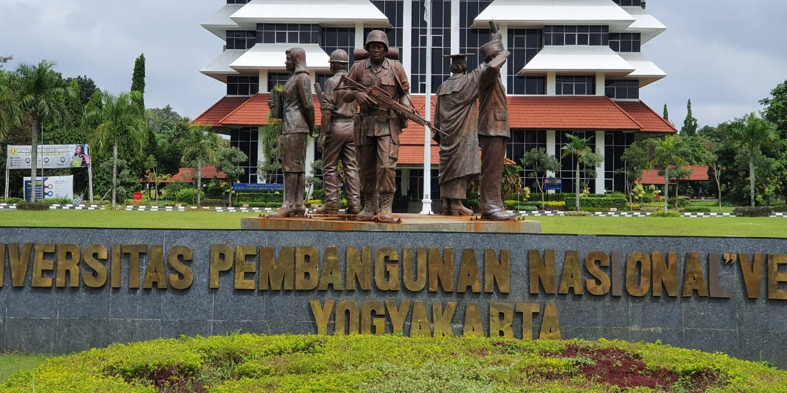

Sejarah
Universitas Pembangunan Nasional "Veteran" Yogyakarta atau biasa disingkat UPNYK, merupakan salah satu Perguruan Tinggi Negeri (PTN) di Indonesia yang berlokasi di Daerah Istimewa Yogyakarta. Pada saat didirikan, UPN "Veteran" Yogyakarta hanya memiliki 3 jurusan. Kini UPN "Veteran" Yogyakarta memiliki 5 fakultas yang terdiri dari 1 program studi untuk D-3, 21 program studi untuk S-1, 8 program studi untuk S-2, serta 1 program studi untuk S-3. Melalui deretan program studi tersebut, UPNYK berkomitmen untuk mewujudkan pendidikan berkualitas dalam ilmu pengetahuan, teknologi, dan bisnis. Dengan fokus pada inovasi, penelitian, dan pengabdian masyarakat, UPNYK mendorong pengembangan potensi individu, serta memberikan kontribusi positif bagi kemajuan Indonesia melalui semangat bela negara.
Pada tahun 1965 atas usul beberapa anggota Veteran yang berdomisili di luar Yogyakarta terjadi pengintegrasian dari beberapa Perguruan Tinggi, yaitu Universitas Veteran Nasional Surakarta menjadi PTPN "Veteran" cabang Surakarta, akademi Perusahaan Veteran Surabaya menjadi PTPN "Veteran" cabang Surabaya. Kemudian pada tahun 1967 menyusul Akademi Tekstil, Akademi Bank dan Akademi Tatalaksana Pelayaran Niaga "Jos Soedarso" yang bernaung di bawah Lembaga Pendidikan Kader Pembangunan (LPKP) yaitu suatu lembaga pendidikan yang diusahakan dan diasuh oleh para anggota Veteran di Jakarta, menjadi PTPN "Veteran" cabang Jakarta, dengan Surat Keputusan Menteri Urusan Veteran dan Demobilisasi nomor: 09/Kpts/Menvet/1967 tanggal 21 Februari 1967. Dengan demikian PTPN "Veteran" tersebar di empat kota besar yaitu Yogyakarta sebagai pusatnya, sedangkan Surakarta, Surabaya dan Jakarta merupakan cabang-cabangnya.